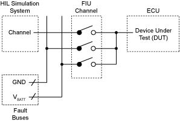
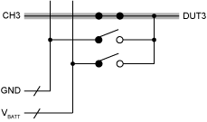
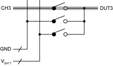
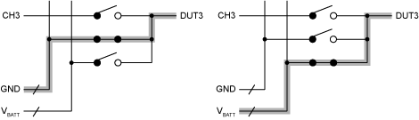
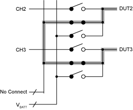
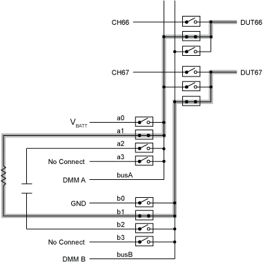

提交有关此主题的反馈。
提交有关此主题的反馈。 访问ni.com/support以获得技术支持。
访问ni.com/support以获得技术支持。故障插入单元 (FIU) 旨在在自动化测试设备（例如硬件在环 (HIL) 仿真系统）和被测设备 (DUT) 之间插入故障条件。下图表示如何在完整的测试系统中使用 FIU。

为了插入故障条件，内部继电器被配置为创建短路连接和开路。
自动化测试应用程序通常使用以下故障条件：
具有可切换故障总线输入的 FIU 可用于创建额外的故障条件，例如通过负载的引脚对引脚短路。
在 FIU 的无故障设置中，测试设备通过 FIU 模块直接连接到 DUT 信号线。下图显示了无故障操作。

在开路或中断故障中，测试应用程序和 DUT 之间的信号线保持开路，以确定 DUT 在信号中断后的行为。下图显示了开路或中断故障。

为了模拟接地或电源短路，信号线从外部故障线或故障总线连接到 DUT。故障总线可以配置为模拟电源线或系统接地。下图表示对地短路和对电源短路。

在引脚对引脚短路中，DUT 信号线连接到一条或多条附加 DUT 信号线。下图显示了引脚对引脚短路。

NI PXI-2510 有两条故障总线。每条故障总线都有四个可切换输入，用于在电池电压 (Vbatt)、接地 (GND) 和其他故障电压电位等多种故障条件中进行选择。每个故障总线的不可切换输入用于使用数字万用表监控故障总线。可切换故障总线输入允许另一种故障情况：通过负载的引脚对引脚短路。
以下示例显示了使用 NI PXI-2510 通过负载的引脚对引脚短路：

提交有关此主题的反馈。 访问ni.com/support以获得技术支持。